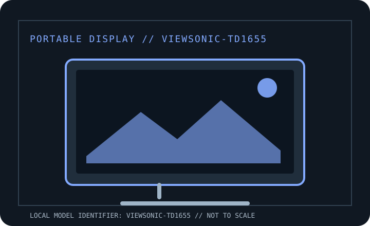

[ INDIVIDUAL COMPONENT // DISPLAYS ]
ViewSonic TD1655 Portable Touch Monitor
Manufacturer-specific portable monitor record. Verify the full rear-label SKU, region and documentation revision before connecting power or relying on a maximum mode.

IDENTIFICATION: Portable computer monitor SKU with a unique model record. Match the rear label and regional suffix to the manufacturer's product page/manual; similarly named models may use different ports or power behavior.
Specifications
| Catalog subcategory | Portable displays |
|---|---|
| Exact product / family | ViewSonic TD1655 Portable Touch Monitor |
| Panel / diagonal | 15.6-inch viewable (16-inch class) IPS LCD with 10-point projected-capacitive touch |
| Native resolution | 1920 × 1080 (Full HD) |
| Native refresh / maximum | 60 Hz |
| Brightness (typical) | 250 cd/m² typical |
| USB-C interface | Two USB-C ports support DP Alt Mode, touch/data and two-way USB-C power delivery up to 60 W; actual power direction/rate depends on source, adapter and port role. |
| HDMI interface | One mini-HDMI 1.4 input. HDMI video needs separate USB-C power; touch over HDMI requires USB-C data connection to the host. |
| Power / USB Power Delivery | USB-C power input; supported USB-C PD pass-through can charge a compatible notebook up to 60 W. Typical use is about 8.6 W; use the supplied adapter where the host cannot provide sufficient power. |
| OSD / controls | On-device OSD via physical controls/joystick for image and audio settings. Touch compatibility: Windows, Chrome OS/Android; macOS touch depends on ViewSonic vTouch driver; iOS/iPadOS touch is not supported. |
| Stand / mounting | Integrated aluminum kickstand tilts to about 60°; protective magnetic cover and supplied passive pen are accessories, not height-adjustable desktop stand/VESA mount. |
Host, OSD & compatibility notes
USB-C video needs DisplayPort Alt Mode. For HDMI, connect USB-C power and (for touch) USB-C data. Touch and vTouch driver availability depend on OS/version; standard video uses the host GPU.
Model-specific caveat: The 60 W figure is PD pass-through under supported wiring, not a guarantee that every host powers the panel and charges at full rate simultaneously. Touch-over-HDMI needs a second cable; verify exact TD1655 regional bundle.
Field use & preservation
Protect the LCD/touch surface in transport, avoid loading the USB-C or HDMI sockets sideways, and test video, power and touch (where fitted) as separate signal paths. Keep the correct cable and power adapter with the monitor.
Record the rear-label model/serial, included cover/stand, cable and adapter ratings, signal timing, OSD configuration, panel condition and any repaired or substituted accessories. Do not open the enclosure; use the manufacturer's service procedure and a qualified technician.
Manufacturer documentation & sources
- ViewSonic — TD1655 official product pageManufacturer product page for resolution, touch, interfaces and portable stand.
- ViewSonic — TD1655 user guide (PDF)Official manual for setup, power, OSD, touch and safety instructions.